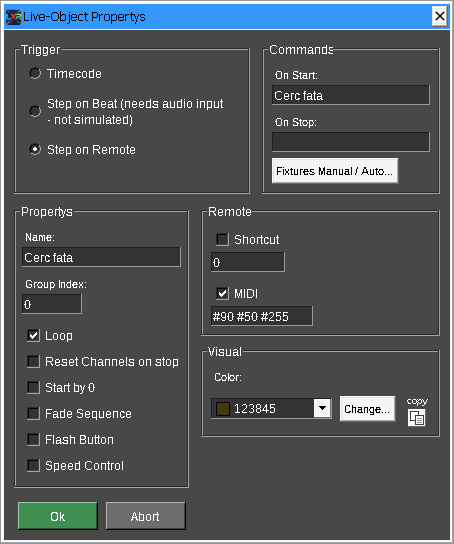

For: FullPlayer
The settings of a button: right click on it > Object Propertys.... The window is called Live-Object Propertys. Ok applies the changes to the open project at once; Save writes them into the project's file. Abort closes the window and leaves the button as it was.

The settings of Cerc fata.
Wait in it): the rest of that macro is dropped, then On Stop runs.U, Wait and setchmode, so they work the same on
the Command Line and in the original LumiDMX. What is applied there stays, even with Abort here.| Setting | What it does |
|---|---|
| Name | The name on the button. Commands find the button by it (capitals and extra blanks do not count). A new name: see below. |
| Group Index | 0 = no group. Buttons with the same number are a group: starting one stops the others of the group. |
| Loop | After the last step it starts again from the first; without Loop it stops there. |
| Reset Channels on stop | When it stops, its channels go to 0 (those no other running button holds). |
| Start by 0 | The first step fades in from 0. Not ticked: it fades in from the values the channels have when it starts. |
| Fade Sequence | When it stops, its light goes down in the release time of the Option tab (with the Option tab's Fade Sequence ticked); the button shows FADE. |
| Flash Button | It runs only while it is held (mouse, key or MIDI); it shows FLASH. |
| Speed Control | The speed track on the button (see Buttons of the Live panel). |
A new name for a button. Commands find a button by its name: a slider (setseqspeed(...)), the macros (runobject(...), stopobject(...), the macro with the button's name) and the On Start / On Stop of the buttons. When the name of a button changes and the old name is used somewhere, a window shows where, by kind: Sliders, Buttons, Macros, each with the number of places. Rename everywhere ticked writes the new name in the ticked kinds too; Only the button changes only the name on the button (the rest keeps the old name and no longer finds it); Cancel leaves everything as it was. Sound2Light, the Library and the Show Editor keep their own copies of the steps, so there is nothing to change there. A name that another object already has, or a macro's name, is refused with a message (capitals and extra blanks do not count: cerc fata is the same name as Cerc fata); a name given back to its own macro after Only the button is allowed.
#90 #50 #255) and MIDI is ticked. It needs a MIDI In port
(Setup & Patch > MIDI) or the APC mini link; without one the window says
so.Several buttons at once: in Design Live-Panel, select several buttons and right click one of them: one window opens for all. Only what you change there is set on each of them; everything else keeps each button's own value. Name, Shortcut, MIDI and Fixtures Manual / Auto belong to one button and cannot be set there.